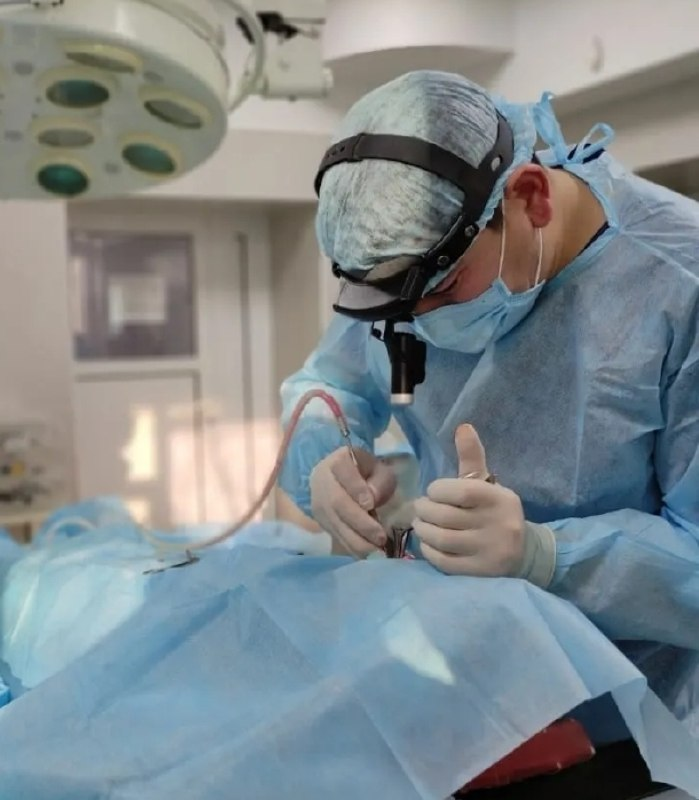

Врач-оториноларинголог (ЛОР-хирург)
Специализируюсь на диагностике и лечении заболеваний уха, горла и носа. Провожу хирургические и эстетические операции на ЛОР-органах. Работаю в ведущих клиниках Кызылорды. Каждый пациент получает индивидуальный подход и максимальную заботу.

Комплексная диагностика и лечение заболеваний уха, горла и носа. Хирургические и эстетические операции на ЛОР-органах.
Диагностика и лечение отитов, тугоухости, шума в ушах, серных пробок, воспаления среднего уха. Чистка слухового прохода. Аудиометрия и тимпанометрия.
Лечение ринита, синусита, гайморита, искривления перегородки. Эндоскопическая диагностика, промывание пазух. Полипэктомия. Работа с препаратом Синупрет.
Терапия ангины, тонзиллита, фарингита, ларингита. Осмотр голосовых связок, лечение охриплости. Промывание миндалин. Препараты Имупрет и Тонзипрет.
Хирургические операции на ЛОР-органах: септопластика, тонзиллэктомия, аденотомия, полипэктомия. Эстетические операции. Международная подготовка.
«Обратилась с хроническим гайморитом. Айдос Болатбекович провёл полное обследование, назначил эффективное лечение. Уже через 2 недели почувствовала значительное улучшение. Очень внимательный доктор!»
«Пришёл с проблемой тугоухости. Доктор провёл диагностику, детально объяснил причины и план лечения. Редкий специалист, который по-настоящему слушает пациента. Рекомендую всем!»
«Привела ребёнка с аденоидами. Доктор нашёл подход к малышу, обследовал без слёз. Лечение назначил без операции. Прошли курс — результат отличный. Огромное спасибо!»
«Делал операцию на перегородке носа. Профессионально, чисто, без осложнений. Дышу свободно уже полгода. Айдос Болатбекович — настоящий профессионал своего дела!»
г. Кызылорда
ул. Коркыт Ата 73, каб. 321
г. Кызылорда, ул. Коркыт Ата 73, каб. 321
Открыть в Google Maps